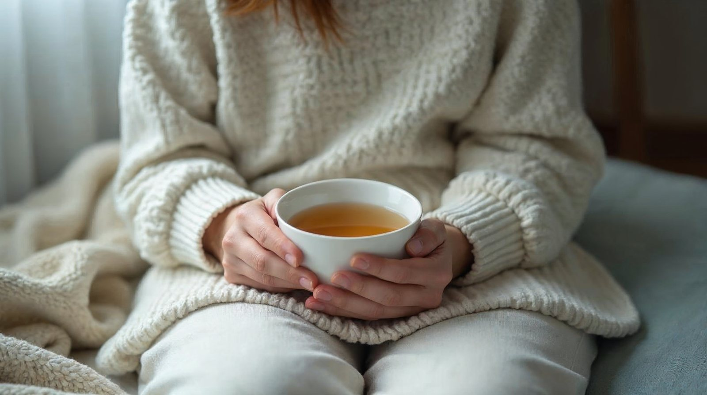

이종호 한의사 감수좋은꿈참사랑한의원 대표원장 (한의사 면허번호 19769)발행 2026-11-25 · 수정 2026-11-25
이 글의 차례
시험 기간에 목과 어깨가 돌처럼 굳고 잠까지 흐트러졌다면, 저는 아픈 자리 하나만 보기보다 그 몇 주 동안 하루가 어떻게 흘러갔는지를 먼저 여쭙습니다. 몇 시에 자고 몇 시에 일어났는지, 끼니는 어땠는지, 커피는 몇 잔이었는지, 마음은 얼마나 쫓겼는지요.
그리고 양손을 올려 달라고 말씀드리고 맥부터 짚습니다. 목·어깨의 긴장과 잠, 소화, 마음은 한 사람의 하루 안에서 서로 이어져 있다고 보기 때문입니다. 다만 심한 두통이나 팔 저림·힘 빠짐, 가슴 통증이 함께 있다면 그것부터 먼저 확인을 받으셔야 합니다.
새벽 두 시, 도서관과 자취방의 풍경
새벽 두 시쯤의 열람실을 떠올려 봅니다. 노트북 화면만 환하고, 책상 위에는 반쯤 남은 아이스 아메리카노와 에너지 음료 캔이 나란히 서 있습니다. 고개는 화면 쪽으로 한참 내려가 있고, 어깨는 귀 가까이 올라붙은 채입니다.
자취방으로 돌아와도 크게 다르지 않습니다. 침대 위에 노트북을 올려놓고 이불 속에서 과제를 마저 씁니다. 저녁은 건너뛰었고, 배가 고파 편의점 컵라면으로 때웁니다. 눕고 나서도 내일 볼 시험 범위가 머릿속을 빙빙 돕니다.
상도동에는 숭실대가, 바로 옆 흑석동에는 중앙대가 있습니다. 같은 동작구 안의 가까운 동네라 그런지, 중간고사와 기말고사 무렵이면 진료실에서 이런 말씀을 자주 듣습니다. "시험 끝나면 괜찮아지겠죠." "목이 원래 좀 안 좋아요." "잠은 시험 끝나고 몰아서 자면 돼요."
그 말씀을 들으면 저는 먼저 그동안 얼마나 버티셨을까 싶습니다. 과제 마감과 시험이 겹치는 몇 주는 몸을 돌볼 틈이 없는 시간입니다. 아픈 걸 알면서도 일단 넘기고 보는 것, 그게 그 시기 학생들의 사정이라는 것도 압니다.
왜 시험 기간에는 목·어깨와 잠이 함께 무너질까요
노트북은 화면이 낮습니다. 도서관 책상이나 카페 테이블에서 노트북을 보면 고개가 자연스럽게 앞으로 빠지고 아래로 숙여집니다. 그 자세로 서너 시간을 버티면 목 뒤와 어깨 위쪽 근육이 쉬지 못하고 계속 일을 하게 됩니다.
여기에 밤샘이 더해집니다. 잠을 충분히 자지 못하면 같은 뻐근함도 더 크게 느끼는 분이 많습니다. 낮에 쌓인 긴장이 밤에 풀려야 하는데, 잠이 짧고 얕으면 그 긴장을 다음 날로 그대로 들고 갑니다.
카페인도 한몫합니다. 오후 늦게, 혹은 밤 열 시에 마신 커피는 새벽까지 남아 잠들기를 어렵게 할 수 있습니다. 잠이 안 오니 다음 날 또 커피를 찾고, 그렇게 몇 주가 돌아갑니다.
끼니를 거르는 것도 그냥 넘길 일이 아닙니다. 아침을 건너뛰고, 점심은 늦게, 저녁은 밤 열한 시에 몰아서 먹으면 속이 더부룩한 채로 눕게 됩니다. 속이 불편하면 잠도 얕아지기 쉽습니다.
그리고 마음이 있습니다. 시험 범위는 줄지 않고, 마감은 다가오고, 혼자 사는 방에는 "오늘은 그만하고 자" 하고 말해 줄 사람이 없습니다. 쫓기는 마음은 어깨를 끌어올리고, 누워서도 머리를 쉬지 못하게 합니다.
저는 이것들이 따로따로 오는 일이 드물다고 생각합니다. 목이 아파서 잠을 못 자는지, 잠을 못 자서 목이 더 굳는지는 사람마다 다르고, 그 순서를 함께 찾아보는 것이 제가 진료실에서 하는 일의 한 부분입니다.
자취 생활도 빼놓을 수 없습니다. 집에서 다닐 때는 누군가 차려 준 밥이 있었고, 밤늦게 불이 켜져 있으면 한마디 해 주는 가족이 있었습니다. 혼자 살면 그 울타리가 사라집니다. 몇 시에 자든, 무엇을 먹든 오롯이 내 몫이 됩니다.
그래서 자취하는 학생분들은 시험 기간에 리듬이 더 크게 흔들리기 쉽습니다. 좁은 방에서는 책상과 침대와 식탁이 한 공간이라 공부하던 자리에서 그대로 눕고, 누운 자리에서 다시 노트북을 엽니다. 몸이 '여기는 쉬는 곳'이라고 느낄 틈이 없는 셈입니다.
먼저 이렇게 여쭙니다
처음 뵙는 학생분께 저는 대략 이런 순서로 여쭙니다. 정답이 있는 질문은 아니니 생각나는 대로 말씀해 주시면 됩니다.
- 시험이나 과제 마감은 언제까지이고, 요즘 하루에 몇 시간쯤 책상이나 노트북 앞에 앉아 계시나요?
- 시험 전과 비교해 잠드는 시각과 일어나는 시각이 얼마나 달라졌나요? 잠들기가 어려운지, 자다가 자주 깨는지도 여쭙니다.
- 커피나 에너지 음료는 하루에 몇 잔, 마지막 잔은 몇 시쯤 드시나요?
- 하루에 끼니를 몇 번 챙기시고, 속이 더부룩하거나 입맛이 없는 날이 있나요?
- 목·어깨가 굳는 것 말고 머리가 무겁거나 눈이 뻑뻑한 느낌, 팔로 내려가는 저림이 있나요?
- 요즘 마음이 얼마나 쫓기시는지, 누워서도 생각이 멈추지 않는 날이 많은지 여쭙습니다.
이 질문들은 진단을 내리려는 것이라기보다 그분의 하루를 같이 그려 보려는 것입니다. 어떤 분은 잠 이야기를 하다가 "사실 밥을 거의 안 먹었어요" 하고 말씀하시고, 어떤 분은 어깨 이야기를 하다가 시험 걱정을 꺼내시기도 합니다.
일상에서 먼저 해 볼 수 있는 것
시험 기간에 생활을 통째로 바꾸기는 어렵습니다. 그래서 저는 늘 한두 가지만 골라 보자고 말씀드립니다. 다 지키려고 하면 오히려 그것도 숙제가 되니까요.
- 노트북을 쓸 때는 책 몇 권이나 거치대로 화면을 눈높이 가까이 올리고, 가능하면 따로 키보드를 써 보기
- 50분 공부하면 자리에서 일어나 열람실 복도나 계단을 한 바퀴 걷고, 어깨를 천천히 뒤로 돌려 보기
- 커피는 오후 이른 시간까지만 마시고, 밤에는 따뜻한 물이나 보리차로 바꿔 보기
- 밤샘을 하더라도 아침 기상 시각은 크게 흔들지 않기, 낮잠은 이른 오후에 짧게
- 하루 한 끼는 앉아서 따뜻하게 먹기, 편의점에서 고를 때도 국물이나 밥이 있는 것으로
- 자취방에서는 침대 위에서 노트북을 쓰지 않기, 침대는 눕는 곳으로만 남겨 두기
도서관 책상에서 할 수 있는 것도 있습니다. 의자를 책상 쪽으로 바짝 당겨 앉고, 등받이에 등을 붙여 봅니다. 고개가 앞으로 빠지는 걸 느낄 때마다 턱을 살짝 당기고 숨을 한 번 길게 내쉬어 보세요.
어깨가 귀 쪽으로 올라가 있지 않은지 가끔 거울이나 창문에 비춰 보는 것도 좋습니다. 생각보다 많은 분이 어깨를 한껏 올린 채로 몇 시간을 앉아 있다가, 일어날 때가 되어서야 목이 굳은 걸 알아차리십니다.
누워서 잠이 안 올 때는 휴대폰으로 시험 범위를 다시 보기보다 화면을 내려놓아 보시기를 권합니다. 불을 낮추고, 내일 할 일은 종이에 몇 줄 적어 머리맡에 두고 눈을 감아 보세요. 적어 두면 머릿속에서 잠깐 내려놓을 수 있다는 분이 많습니다.
샤워할 때 따뜻한 물을 목 뒤와 어깨에 잠시 흘려 보내는 것도 괜찮습니다. 다만 뻐근하다고 목을 세게 꺾거나 비틀어 소리를 내는 습관은 권하지 않습니다. 천천히, 아프지 않은 범위에서 움직여 주세요.
한의원에서 함께 살필 수 있는 경우
이런 노력을 해 봐도 잘 풀리지 않는다면, 혹은 시험이 끝났는데도 몸이 돌아오지 않는다면 한번 들러 주셔도 좋겠습니다.
- 시험이 끝나고 한두 주가 지나도 목·어깨 뻐근함이 계속되거나 고개 돌리기가 불편한 경우
- 잠드는 데 오래 걸리거나 자주 깨는 날이 이어져 낮에 집중하기가 어려운 경우
- 끼니가 불규칙해진 뒤로 속이 더부룩하거나 입맛이 들쭉날쭉한 경우
- 시험 때마다 같은 자리가 굳고 같은 방식으로 잠이 무너지는 일이 되풀이되는 경우
진료실에 오시면 저는 양손을 올려 달라고 말씀드리고 맥부터 짚습니다. 손목 위에서 느껴지는 것이 그분이 말씀하신 하루와 맞는지, 제가 놓친 건 없는지 이야기를 나누면서 살핍니다. 필요하다고 판단되면 혀를 보거나 배를 살피기도 합니다.
목과 어깨는 직접 만져 보며 어디가 얼마나 굳어 있는지, 고개를 어느 쪽으로 돌릴 때 불편한지 확인합니다. 그다음 침이나 추나, 한약 상담 가운데 지금 상태에 맞는 방법을 함께 정합니다. 추나요법과 통증재활을 주요 진료 분야로 보는 조영기 수석진료원장과 함께 살피기도 합니다.
진료가 끝날 때는 생활에서 바꿔 볼 것을 한두 가지로 줄여서 말씀드립니다. 커피 마감 시각이든, 노트북 높이든, 기상 시각이든 그분이 실제로 해 볼 수 있는 것으로요. 다음에 오시면 그걸 해 보니 어땠는지부터 여쭙겠습니다.
수업 사이에 짧게 다녀가려면
학생분들은 시간이 늘 빠듯합니다. 공강 시간이나 수업이 끝난 저녁에 짧게 다녀가시는 경우가 많은데, 아래 몇 가지를 챙겨 오시면 첫 진료가 한결 수월합니다.
- 요즘 며칠간 잠든 시각과 일어난 시각을 대략 적은 메모(휴대폰 메모도 괜찮습니다)
- 복용 중인 약이 있다면 약 이름이나 약 봉투 사진
- 다른 병원에서 받은 검사 결과가 있다면 그 자료
- 시험이나 과제 마감 일정, 그리고 언제 가장 아픈지에 대한 한 줄
좋은꿈참사랑한의원은 평일 09:30~20:00에 진료하고 점심시간은 13:00~14:00입니다. 토·일·공휴일은 09:30~15:00이며 점심시간 없이 진료합니다. 첫 진료에 걸리는 시간이나 그날 대기 상황은 방문 전 전화로 확인해 주세요. 전화는 02-815-7510입니다.
주소는 서울 동작구 만양로2길 2 신성빌딩 3층·5층(상도동)입니다. 상도역(7호선) 3번 출구로 나와 약 200m 직진한 뒤 오거리에서 우회전해 약 200m 오시면 됩니다. 노량진역(1·9호선) 3번 출구에서 마을버스 동작01을 타고 신동아리버파크에서 내리셔도 됩니다.
미리 시간을 잡아 두고 싶다면 네이버 예약을 이용하셔도 됩니다. 평일 저녁 늦게 오실 생각이라면 마감 시각에 가까울수록 상담이 짧아질 수 있으니, 전화로 한번 여쭤봐 주세요.
이렇게 기록해 오시면 상담이 쉬워집니다
거창한 일기가 아니어도 됩니다. 사나흘만 적어 오셔도 제가 그분의 하루를 훨씬 또렷하게 그려 볼 수 있습니다.
- 잠든 시각, 일어난 시각, 밤에 깬 횟수
- 커피·에너지 음료를 마신 시각과 양
- 끼니를 먹은 시각과 거른 끼니
- 목·어깨가 가장 굳는 시간대와 그때 하고 있던 일(노트북, 필기, 휴대폰)
- 마음이 특히 쫓기거나 가라앉았던 날
이 기록을 보면 "시험 때문에 다 힘들었다"는 말이 조금 더 나뉘어 보입니다. 잠이 먼저 밀렸는지, 끼니가 먼저 무너졌는지, 어깨가 먼저 굳었는지요. 그 순서가 보이면 무엇부터 손볼지도 함께 정하기가 쉬워집니다.
이런 증상은 먼저 확인이 필요합니다
시험 기간의 뻐근함으로 넘기기 전에 먼저 살펴봐야 할 신호들이 있습니다. 아래와 같은 경우에는 한의원보다 먼저 다른 진료를 받으시기를 권합니다.
- 갑자기 생긴 아주 심한 두통, 지금까지 겪어 보지 못한 두통, 혹은 두통과 함께 열·구토·말이 어눌해지는 증상이 있는 경우
- 한쪽 팔이나 손이 저리면서 힘이 빠지거나, 물건을 자꾸 떨어뜨리는 경우
- 가슴이 조이듯 아프거나 숨이 차고 식은땀이 나는 경우
- 넘어지거나 부딪힌 뒤 목 통증이 생긴 경우
이런 증상이 갑자기 나타났거나 심하다면 망설이지 말고 가까운 응급실로 가셔야 합니다. 복용 중인 약이 있다면 처방한 의사와 상의 없이 줄이거나 끊지 마시고, 진료 때 먼저 알려 주세요.
마음이 많이 힘든 것도 같은 무게로 봐야 합니다. 불안이 너무 심해 숨이 막히고 아무것도 손에 잡히지 않거나, 스스로를 해치고 싶은 생각이 든다면 혼자 견디지 마세요. ☎ 109에 바로 도움을 요청하시고, 가까운 사람에게도 지금 힘들다고 꼭 말씀해 주셨으면 합니다.

시험이 끝난 뒤의 몸에게
시험이 끝나는 날, 많은 분이 하루 종일 잠만 잡니다. 그동안 버틴 걸 생각하면 그럴 만합니다. 다만 그 뒤 며칠은 기상 시각부터 천천히 원래대로 돌려놓아 보세요. 몸은 생각보다 오래 시험 기간의 리듬을 기억하고 있습니다.
저는 학생분들의 맥을 짚을 때 가끔 이런 생각을 합니다. 이 몸이 이 사람을 위해 참 많이 버텨 주었구나. 밤샘도, 거른 끼니도, 쫓기는 마음도 다 이 몸이 받아 내고 있었구나. 그래서 "시험 끝나면 괜찮아지겠죠"라는 말씀에 그냥 고개만 끄덕이기가 어렵습니다.
다음 시험 기간이 오기 전에 한번 들러 주셔도 좋고, 시험이 끝난 뒤에 와 주셔도 좋습니다. 오시면 이번 학기에 언제 가장 힘드셨는지, 잠은 지금 어떤지부터 여쭙겠습니다. 그리고 양손을 올려 달라고 말씀드리겠습니다.

여쭙는 것
- 시험이나 과제 마감은 언제까지이고, 요즘 하루에 몇 시간쯤 책상이나 노트북 앞에 앉…
- 시험 전과 비교해 잠드는 시각과 일어나는 시각이 얼마나 달라졌나요? 잠들기가 어려운…
- 커피나 에너지 음료는 하루에 몇 잔, 마지막 잔은 몇 시쯤 드시나요?
생활에서 해 볼 것
- 노트북을 쓸 때는 책 몇 권이나 거치대로 화면을 눈높이 가까이 올리고, 가능하면 따…
- 50분 공부하면 자리에서 일어나 열람실 복도나 계단을 한 바퀴 걷고, 어깨를 천천히…
- 커피는 오후 이른 시간까지만 마시고, 밤에는 따뜻한 물이나 보리차로 바꿔 보기
한의원에서 함께 살필 것
- 시험이 끝나고 한두 주가 지나도 목·어깨 뻐근함이 계속되거나 고개 돌리기가 불편한 경우
- 잠드는 데 오래 걸리거나 자주 깨는 날이 이어져 낮에 집중하기가 어려운 경우
- 끼니가 불규칙해진 뒤로 속이 더부룩하거나 입맛이 들쭉날쭉한 경우
먼저 확인이 필요한 신호
- 갑자기 생긴 아주 심한 두통, 지금까지 겪어 보지 못한 두통, 혹은 두통과 함께 열…
- 한쪽 팔이나 손이 저리면서 힘이 빠지거나, 물건을 자꾸 떨어뜨리는 경우
- 가슴이 조이듯 아프거나 숨이 차고 식은땀이 나는 경우
한눈에 보는 표
| 구분 | 핵심 |
|---|---|
| 여쭙는 것 | 시험이나 과제 마감은 언제까지이고, 요즘 하루에 몇 시간쯤 책상이나 노트북 앞에 앉아 계시나요? 시험 전과 비교해 잠드는 시각과 일어나는 시각이 얼마나 달라졌나요? 잠들기가 어려운지, 자다가 자주 깨는지도 여쭙니다. |
| 생활에서 해 볼 것 | 노트북을 쓸 때는 책 몇 권이나 거치대로 화면을 눈높이 가까이 올리고, 가능하면 따로 키보드를 써 보기 50분 공부하면 자리에서 일어나 열람실 복도나 계단을 한 바퀴 걷고, 어깨를 천천히 뒤로 돌려 보기 |
| 한의원에서 함께 살필 것 | 시험이 끝나고 한두 주가 지나도 목·어깨 뻐근함이 계속되거나 고개 돌리기가 불편한 경우 잠드는 데 오래 걸리거나 자주 깨는 날이 이어져 낮에 집중하기가 어려운 경우 |
| 먼저 확인이 필요한 신호 | 갑자기 생긴 아주 심한 두통, 지금까지 겪어 보지 못한 두통, 혹은 두통과 함께 열·구토·말이 어눌해지는 증상이 있는 경우 한쪽 팔이나 손이 저리면서 힘이 빠지거나, 물건을 자꾸 떨어뜨리는 경우 |
자주 묻는 질문
시험이 끝나면 저절로 괜찮아지지 않을까요?
시험이 끝나고 잠과 끼니가 돌아오면서 뻐근함이 함께 풀리는 분도 있습니다. 다만 한두 주가 지나도 목·어깨가 계속 굳어 있거나 잠이 돌아오지 않는다면 한번 살펴보시기를 권합니다. 시험 때마다 같은 일이 되풀이된다면 다음 시험 전에 미리 이야기를 나눠 보는 것도 방법입니다.
공강 시간에 잠깐 들러도 진료를 받을 수 있나요?
첫 진료에는 맥을 짚고 하루의 리듬을 여쭙는 시간이 필요합니다. 그날 대기 상황과 걸리는 시간은 방문 전 전화(02-815-7510)로 확인해 주세요. 네이버 예약으로 미리 시간을 잡아 두셔도 됩니다.
목·어깨가 아파서 왔는데 잠이나 소화까지 왜 물어보시나요?
잠이 짧고 얕으면 같은 뻐근함도 더 크게 느끼는 분이 많고, 끼니가 불규칙하면 속이 불편해 잠이 얕아지기도 합니다. 그래서 저는 맥부터 짚고 목·어깨와 함께 잠·소화·마음 같은 몸 전체의 리듬을 같이 여쭙습니다.
진료 시간은 어떻게 되나요?
평일 09:30~20:00(점심 13:00~14:00), 토·일·공휴일 09:30~15:00(점심시간 없음)입니다. 상도역(7호선) 3번 출구에서 약 200m 직진한 뒤 오거리에서 우회전해 약 200m 오시면 됩니다.
좋은꿈참사랑한의원은 재진 때 지난번 이야기부터 이어서 여쭙니다. 진료시간과 예약은 오시는 길에서 확인하세요.
어디서 상담받을 수 있나요?
좋은꿈참사랑한의원은 서울 동작구 만양로2길 2 신성빌딩 3층·5층(서울 동작구 상도동, 7호선 상도역 3번 출구 근처)에 있습니다. 한의사 3명(이종호 대표원장, 조영기 수석진료원장, 정원영 진료원장)이 진료합니다. 진료시간은 평일 09:30~20:00(점심 13:00~14:00), 토·일·공휴일 09:30~15:00이며, 방문 전 전화로 확인을 권합니다. 예약은 네이버 예약, 카카오톡 상담, 전화 02-815-7510로 받습니다.
이 글은 일반적인 건강 정보이며 개인의 진단이나 치료를 대신하지 않습니다. 증상이 있거나 복용 중인 약이 있다면 진료를 통해 확인하세요. 치료 효과는 개인마다 다를 수 있습니다.
작성 기준: 일반적으로 알려져 있는 건강 정보를 참고해 정리했습니다(대표원장 감수). 증상 기록은 1~2주 동안 하루 1회, 비슷한 시간에 적어 오시면 지난 상태와 비교하기 쉽습니다.